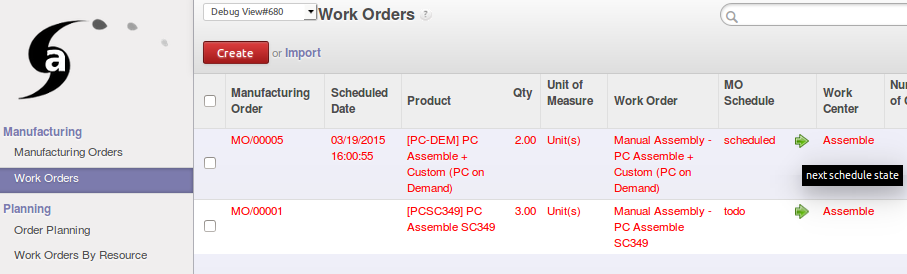
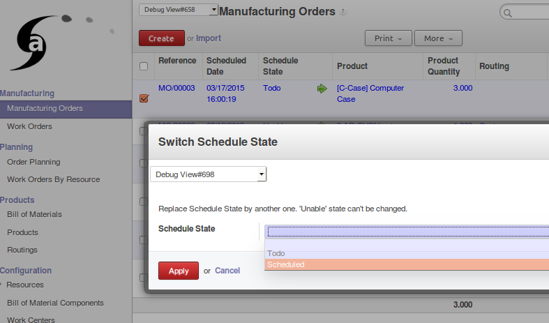

<section class="oe_container oe_website_only">

<div class="oe_row oe_more_spaced">
    <h3 class="oe_slogan">MRP Schedule</h3>
    <h3 class="oe_slogan"><a href="http://odoo-community.org/">An OCA module</a> : validated by Odoo community experts</h3>
    <h4 class="oe_slogan"><a href="http://www.akretion.com/fr">By Akretion</a></h4>
<div class="oe_span6">

<h2>MRP Schedule</h2>

This module add a field 'schedule state' in Manufacturing Order as sub state.

It's a kind of 'sub state' of MO state 'Ready To Produce' dedicated to
planification, scheduling and ordering


<table>
    <tr>
        <td><h3>This state can be update in MO tree view ...</h3>
            <div class="oe_row_img oe_centered"></div>
            <br/><br/>
        </td>
    </tr>
    <tr>
        <td><h3>... or in a massive way with a wizard</h3>
        <div class="oe_row_img oe_centered"></div>
        <br/><br/>
        </td>
    </tr>
</table>

    <div class="oe_row oe_centeralign oe_more_space">
        <a href="http://www.akretion.com/contact" class="oe_button oe_big">Contact us</a><br>
        <a href="https://github.com/OCA/manufacture/tree/7.0" class="oe_button oe_big">Access to the code</a>
    </div>

</section>
